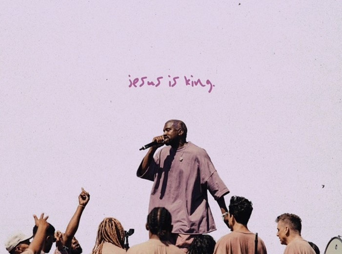

Jesus is King: Week 1
Life / Intro Questions (Choose 1 or 2)
- Do you like Thanksgiving or Christmas better? Why?
- If you had to get rid of one Thanksgiving food, what would it be?
Connection Questions
- Who is God to you?
- Which statement do you relate to better?
- God is light.
- God is faithful.
- God is freedom.
- How do you relate this to our church values?
Church Value Spotlight
Sermon in a Sentence
- It’s not about who you are, it’s about who God is.
Scripture
John 1:1-13 In the beginning was the Word, and the Word was with God, and the Word was God. 2He was with God in the beginning. 3All things were created through him, and apart from him not one thing was created that has been created. 4In him was life, and that life was the light of all mankind. 5That light shines in the darkness, and yet the darkness did not overcome it. 6There was a man sent from God whose name was John. 7He came as a witness to testify about the light, so that all might believe through him. 8He was not the light, but he came to testify about the light. 9The true light that gives light to everyone, was coming into the world. 10He was in the world, and the world was created through him, and yet the world did not recognize him. 11He came to his own, and his own people did not receive him. 12But to all who did receive him, he gave them the right to be children of God, to those who believe in his name 13who were born, not of natural descent, or of the will of the flesh, or of the will of man, but of God.
Discussion Questions
- What does verse 4 mean? “In him was life, and that life was the light of all mankind.”
- What are some miracles you have seen because you were faithful?
- What does freedom look like to you? What have you tried to find it in?
Life Application
- How are you going to be “the light” this week? (John 8:12)
- If God is faithful, how can we be faithful? (Faithfulness leads to the miraculous)
Take It Out
- Close small group out with prayer requests.
- Prayer for salvation in and through the students’ lives by knowing who “God Is”.
- Remind your students that Fusion is right around the corner, January 24-26. They can register now at fusion.events for only $49.
- If that is too much money, scholarships are available - check with your coach for more info.